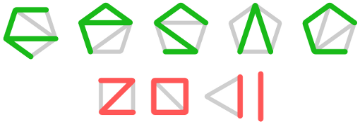

Program Committee
Chairs
Members
- Michael Albert (University of Otago, New Zealand)
- Matthias Beck (San Francisco State University, USA)
- Eva-Maria Feichtner (University of Bremen, Germany)
- Philippe Flajolet (INRIA Rocquencourt, France)
- Ira Gessel (Brandeis University, USA)
- Patricia Hersh (North Carolina State University, USA)
- Thomas Lam (University of Michigan, USA)
- Svante Linusson (KTH Royal Institute of Technology, Sweden)
- Ezra Miller (Duke University, USA)
- Isabella Novik (University of Washington, USA)
- Nathan Reading (North Carolina State University, USA)
- Andrew Rechnitzer (University of British Columbia, Canada)
- Astrid Reifegerste (University of Magdeburg, Germany)
- Yuval Roichman (Bar-Ilan University, Israel)
- John Shareshian (Washington University in St. Louis, USA)
- Gilles Schaeffer (CNRS, École Polytechnique, France)
- Stephanie van Willigenburg (University of British Columbia, Canada)
- Vince Vatter (University of Florida, USA)
- Hiro-Fumi Yamada (Okayama University, Japan)
- Jiang Zeng (Université Claude Bernard Lyon 1, France)
Organizing Committee
Chair
Members
Local organizer for information on accommodation, excursion and travel
RS Travel Solutions / RS-ferðalausnir slf
Karfavogur 54, 104 Reykjavik , Iceland
Tel.: +354 568 7939 or +354 892 7073, fax: +354 568 7939
Contact: Ragnheiður Stefánsdóttir,
E-mail: fpsac2011@rstravelsolutions.com